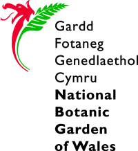
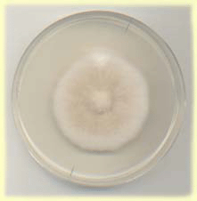

My Work
I work in the Institute of Biological Sciences, University of Wales, Aberystwyth, with Dr. Gareth Griffith, in the field of mycology- that's fungus, for any non-biologists mad enough to be reading this!
The official title of my PhD is, 'The effects of disturbance on the biodiversity and population structure of rhizosphere fungi in grasslands'. Things have changed a little since then- I am working on root-colonising fungi rather than rhizosphere fungi- but fundamentally the project is the same.
The project aims to test the hypothesis that agricultural disturbance such as ploughing and fertilisation have a detrimental effect on these fungi, analogous to that observed on botanical biodiversity. Half my funding is provided by the National Botanic Garden of Wales, my field site in Carmarthenshire, Wales, and the other half by the university.
The hypothesis is tested, essentially, by comparing the communities of root colonising fungi isolated from internal root tissue from disturbed and undisturbed grassland sites. The form-genus Fusarium is also studied in more depth to examine differences in genetic diversity of isolates from the two sites. Fusarium was chosen as it is commonly occurring and experimentally tractable. I am also investigating novel and rapid methods for the reliable identification of this taxonomically complex group, such as Fourier Transform Infrared Spectroscopy and Directed Termination Polymerase Chain Reaction, backed up by sequence data obtained from field isolates.
Details for my research group can be found on the Mycology Group page.
Also available is my research poster. It isn't all completely legible due to the size problem but I'm always happy to answer questions on holcus@hotmail.com
Back to main page